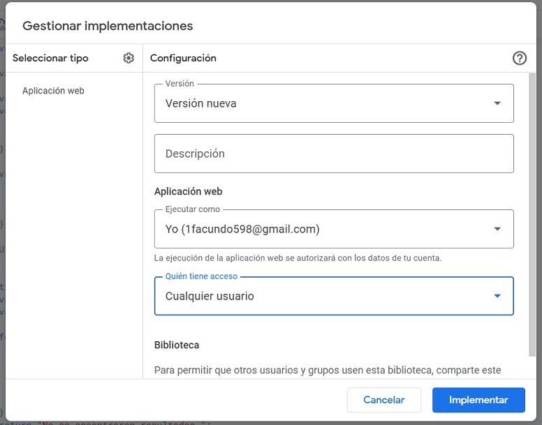
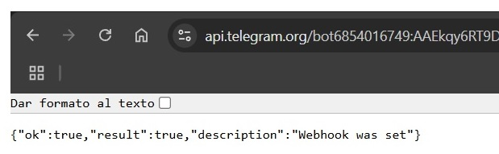
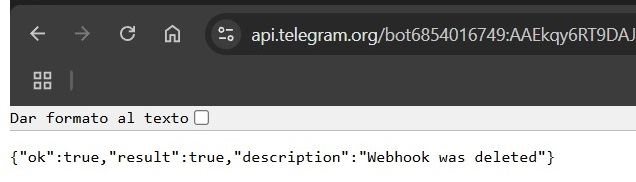
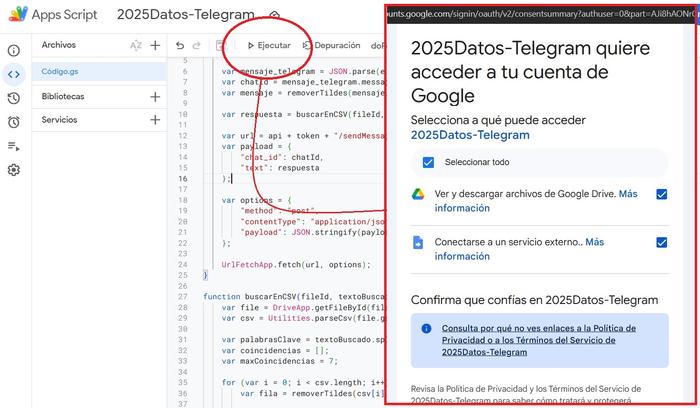

Se puede consultar por datos dentro de un CSV alojado en Google Drive y enviarlo por Telegram, mediante el uso de Google Apps Script y Telegram Bot API.
DriveApp para acceder al archivo y
Utilities.parseCsv() para procesarlo.doPost(e) para recibir mensajes.El siguiente código recibe mensajes de Telegram, busca coincidencias en un CSV y responde con los resultados.
function doPost(e) {
var token = "TU_TOKEN_DE_TELEGRAM";
var fileId = "1YHsMu1HmAAsJfc4KzwF90gK3_aMd16Ks";
var api = "https://api.telegram.org/bot";
var mensaje_telegram = JSON.parse(e.postData.contents);
var chatId = mensaje_telegram.message.chat.id;
var mensaje = removerTildes(mensaje_telegram.message.text.toLowerCase());
var respuesta = buscarEnCSV(fileId, mensaje);
var url = api + token + "/sendMessage";
var payload = {
"chat_id": chatId,
"text": respuesta
};
var options = {
"method": "post",
"contentType": "application/json",
"payload": JSON.stringify(payload)
};
UrlFetchApp.fetch(url, options);
}
function buscarEnCSV(fileId, textoBuscado) {
var file = DriveApp.getFileById(fileId);
var csv = Utilities.parseCsv(file.getBlob().getDataAsString());
var palabrasClave = textoBuscado.split(" ");
var coincidencias = [];
var maxCoincidencias = 7;
for (var i = 0; i < csv.length; i++) {
var fila = removerTildes(csv[i].join(" ").toLowerCase());
var todasCoinciden = palabrasClave.every(palabra => fila.includes(palabra));
if (todasCoinciden) {
coincidencias.push(csv[i].join(" | "));
if (coincidencias.length >= maxCoincidencias) break;
}
}
return coincidencias.length > 0
? "Resultados encontrados:\n" + coincidencias.join("\n")
: "No se encontraron resultados.";
}
function removerTildes(texto) {
return texto.normalize("NFD").replace(/[̀-ͯ]/g, "");
}
https://api.telegram.org/botTU_TOKEN_DE_TELEGRAM/setWebhook?url=TU_URL_DEL_SCRIPT

https://api.telegram.org/botYOUR_BOT_TOKEN/deleteWebhook

Ahora el script necesita una primera ejecución manual para solicitar los permisos necesarios. Posteriormente debería funcionar automáticamente cada vez que el bot reciba un mensaje en Telegram.
